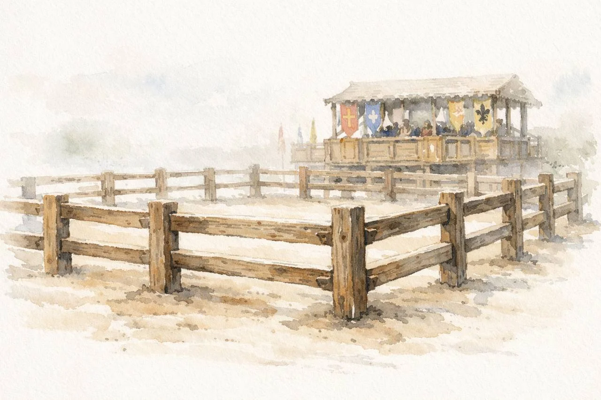

Fior di Battaglia — The Flower of Battle
E comiçemo al braçare. L'oquale sie di dua razone: come da plazo e di ira, coe per la uita cu ogni inzano e falsira e crudelita che si po fare.
Written around 1410 by the Friulian knight and fencing master Fiore Furlano de'i Liberi, the Fior di Battaglia is the most complete surviving medieval Italian combat treatise. Dedicated to Niccolò III d'Este, Marquis of Ferrara, it covers unarmed grappling, dagger, sword in one and two hands, armored combat, poleaxe, spear, and mounted fighting. The Getty manuscript — the most complete of four surviving copies — contains 47 folios of illustrated instruction, each play spoken in the voice of the figure performing it.
Fiore writes in Middle Italian (Venetian dialect, c. 1410). His technical vocabulary maps directly onto modern combat sports concepts — the words encode distinctions that practitioners still navigate today.

The manuscript operates in six distinct rhetorical modes, often layered within a single passage. This is not a manual in the modern sense — it is a dramatic performance on parchment, where each figure speaks in first person, boasting, threatening, and instructing simultaneously.
”And if that lock looks like it will fail me, then I will switch to one of the other locks that follow.”
”When I press my thumb under your ear you will feel so much pain that you will go to the ground for sure.”
”I am the Iron Gate, full of danger. Those who oppose me will always end up in pain and suffering.”
”What you plan to do cannot always be done.”
”This art is so vast that there is no man in the world with so great a memory that he could keep in mind without books a quarter of this art.”
”Five times, for my honor, I was compelled to fight in strange places, without relatives and without friends, having no hope except in God, in my art, and in my sword.”
Fiore's contexts of combat. The Getty (fol. 2r) names two kinds: solaço (pleasure — cooperative practice) and ira (anger — for one's life). Separately, in fol. 1r–1v, he discusses sbarra (the barriers — formal armoured combat, where ”it is rare that anyone dies”) and contrasts it with unarmoured duelling with sharp swords, where ”a single mistake in your defense could cost you your life.” Critically, the barriers can themselves be a oltrança — to the death. So armour and rules don't eliminate lethality; they reduce it. Fiore teaches one system across all these contexts. When envious masters forced him to fight five times — unarmoured, with sharp swords, in strange places — he proved it worked.
The Pisani Dossi MS (dated February 10, 1409) is a shorter, more condensed redaction by the same author, Fiore dei Liberi. Dedicated to Niccolò III d'Este. 36 folios vs. the Getty's 47. The images below are from Novati's 1902 facsimile. Where the Getty uses solaço ("pleasure") for cooperative grappling, the Pisani Dossi uses d'amore ("of love") — a different word choice that may reflect evolving thought across the decade separating the manuscripts.
Manuscript images: J. Paul Getty Museum, Open Content Program (CC0).
Italian transcriptions: Michael Chidester (CC BY-NC-SA 4.0) via Wiktenauer.
Getty translation: Colin Hatcher. Morgan translation: Michael Chidester.
OCR & additional translation: Claude Vision, 2026.
Part of the GrapplingPrimitives History of Grappling project.
About this project — tools, sources, accuracy caveats, and lessons learned.